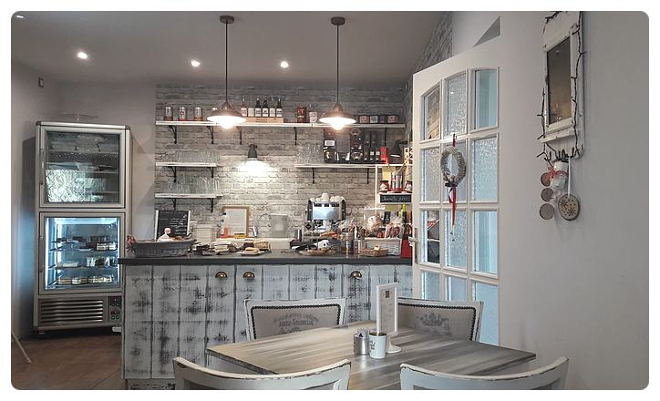
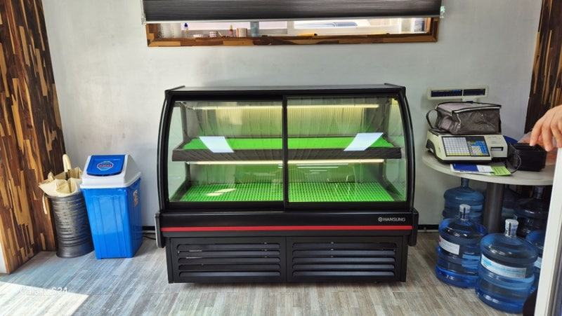

정육쇼케이스
정육쇼케이스 여름철, 성수기 전에 해 둘 점검과 위생 관리

정육쇼케이스는 여름이 오기 전에 기계실 먼지 청소, 문 패킹과 온도 회복 속도 점검, 햇빛과 열원을 피한 배치를 먼저 해 두셔야 합니다. 한여름에는 청소할 때 고기를 밖에 오래 두지 않도록 짧게 끝내고, 핏물 받침과 패킹 틈을 자주 닦아 세균이 번지지 않게 관리하는 것이 핵심입니다.
안녕하세요. 정육점과 식육식당의 고기 진열장을 만들고 관리까지 돕는 한성쇼케이스입니다.
날이 더워지면 정육점 사장님들의 전화가 늘어납니다. "어제까지 멀쩡했는데 오늘 오후부터 고기 색이 이상해요" 같은 말씀이죠.
기온이 오르는 날, 손님이 몰리는 저녁에 증상이 한꺼번에 나타나는 경우가 많습니다.
여름은 쇼케이스 바깥 온도가 올라 같은 온도를 지키는 데 힘이 더 들고, 문을 여닫는 횟수도 늘어 냉기 손실이 커지는 계절입니다.
여기에 습도까지 높아 세균이 번식하기 좋은 조건이 겹칩니다.
오늘은 성수기에 들어가기 전에 해 둘 점검과, 한여름 영업 중에 챙길 위생 관리 요령을 정리해 보겠습니다.
1. 더워지기 전에 할 기계 점검
봄이 끝나 갈 무렵 기계실 그릴과 응축기 주변 먼지를 한 번 정리해 두세요. 겨울 동안 쌓인 먼지가 그대로 있으면 여름 첫 더위에 열이 빠지지 못해 냉기가 금세 약해집니다.
문을 열고 고기를 채운 뒤 설정 온도로 돌아오는 시간을 재 두는 것도 좋은 습관입니다. 평소보다 눈에 띄게 오래 걸리면 성수기 전에 미리 점검을 받으세요.
여름에는 A/S 접수가 몰려 같은 고장도 대기 시간이 길어질 수 있습니다.
- 기계실 그릴·응축기 먼지 청소
- 문 연 뒤 온도 회복 시간 확인
- 이상 징후는 성수기 전에 접수
2. 문 패킹과 유리 결로
여름에는 문이 조금만 덜 닫혀도 습한 바깥 공기가 들어와 내부에 성에가 생기고 냉각 효율이 떨어집니다.
패킹이 찢어지거나 굳은 곳이 없는지, 핏물이 끼어 들뜬 곳이 없는지 손으로 눌러 확인해 보세요.
습도가 높은 날엔 유리 바깥에 물방울이 맺혀 손님이 고기를 제대로 보지 못합니다. 결로 방지 열선이 정상적으로 작동하는지, 에어컨 바람이 유리에 직접 닿아 온도 차를 키우고 있지 않은지도 함께 보세요.


3. 배치: 햇빛과 열원 피하기
쇼윈도 앞에 둔 정육쇼케이스는 여름 오후 햇빛을 그대로 받습니다. 블라인드나 필름으로 직사광선을 막고, 가능하면 햇빛이 비껴드는 위치로 옮기는 것을 검토해 보세요.
식육식당이라면 숯불 화구와 환기 덕트 열이 쇼케이스 쪽으로 흐르지 않는지 확인이 필요합니다. 쇼케이스 위나 뒤에 포장재 박스를 올려 두면 통풍을 막아 더위에 더 약해지니 여름엔 특히 비워 두세요.
- 쇼윈도 직사광선 차단
- 화구·덕트 열 흐름 확인
- 상단·뒷면 짐 치우기
4. 한여름 위생 관리
여름에는 핏물 받침과 바닥 트레이에 고인 물이 하루만 지나도 냄새가 나고 세균이 번지기 쉽습니다. 영업이 끝나면 받침을 빼서 세척하고, 패킹 틈은 물에 희석한 소독제를 적신 행주로 닦은 뒤 깨끗한 물로 마무리하세요.
청소하느라 고기를 꺼낼 때는 시간을 짧게 잡아야 합니다. 더운 날엔 실온에 잠깐만 둬도 상태가 변할 수 있으니, 작업장 냉장고에 옮겨 두고 칸별로 나눠 청소하는 방식이 안전합니다.
상한 고기나 손질 자투리는 미루지 말고 바로 처리하세요.
진열 방식도 여름엔 조금 바꿔 보세요. 한낮처럼 손님이 뜸한 시간에는 진열량을 줄여 작업장 냉장고에 보관하고, 저녁 피크 전에 채워 넣으면 쇼케이스 안 고기가 문 여닫는 냉기 손실에 덜 노출됩니다.
체크리스트
- 성수기 전 기계실 먼지 청소
- 온도 회복 시간과 문 패킹
- 결로 방지 열선 작동
- 직사광선·화구 열 차단
- 핏물 받침 매일 세척
현장에서 자주 보는 경우: 냉장고에 넣었으니 안심하는 여름
냉장고에 넣어 두면 식중독 걱정은 없다고 생각하시는 분이 많지만, 내부 청소를 제대로 하지 않으면 비브리오균, 포도상구균, 리스테리아균 같은 세균이 자랄 수 있습니다.
식재료가 아무리 신선해도 보관하는 공간이 깨끗하지 않으면 소용이 없다는 뜻입니다.
원문에서는 여름철 냉장고를 청소할 때 꺼낸 음식이 쉽게 변하니 20분 안에 끝내도록 하고, 눌어붙은 얼룩은 표백제나 알코올을 물에 희석해 닦으며, 식재료는 투명한 밀폐용기에 담아 구매 시기와 용도를 적어 두라고 권합니다.
고기를 다루는 정육쇼케이스라면 이 기준을 더 엄격하게 지키셔야 합니다.





자주 묻는 질문
여름에는 설정 온도를 더 낮춰야 하나요?
무작정 낮추기보다 설정값이 실제로 지켜지는지를 먼저 확인하세요. 온도계로 칸별 온도를 재 보고, 설정과 차이가 크면 기계 점검이 필요한 신호입니다.
저녁마다 고기 색이 변하는 이유가 뭘까요?
손님이 몰려 문을 자주 여닫고 실내 온도도 높은 시간대라 냉기가 따라가지 못하는 경우가 많습니다. 문 여닫는 횟수를 줄이고 온도 회복 속도를 점검해 보세요.
여름에 고장 나면 고기는 어떻게 하나요?
작업장 냉장고나 냉동고에 여유 칸을 미리 남겨 두고, A/S 연락처를 쇼케이스 옆에 붙여 두세요. 한성쇼케이스는 전국 240여 개 A/S 센터로 지역별 접수를 받습니다.
매장 조건에 맞춰 만드는 한성쇼케이스
원하시는 제품 사진과 설치할 공간 사진만 보내 주셔도 매장에 맞는 구성을 추천해 드립니다.
- 전국 240여 개 A/S 전담 센터 운영
- 본사 대량 자재 매입으로 품질 대비 합리적인 가격
- 유럽제·삼성 냉각 콤프레셔 적용
- 국내 최초 쇼케이스 전문 디자이너 상주
매장 폭과 원하는 진열 구성을 알려 주세요. 실측과 견적을 안내해 드립니다.
031-986-2458